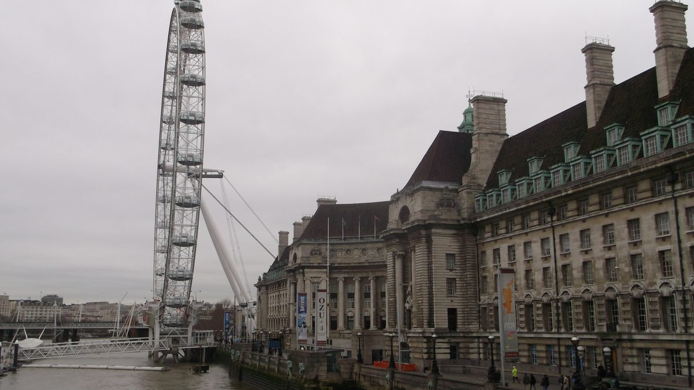
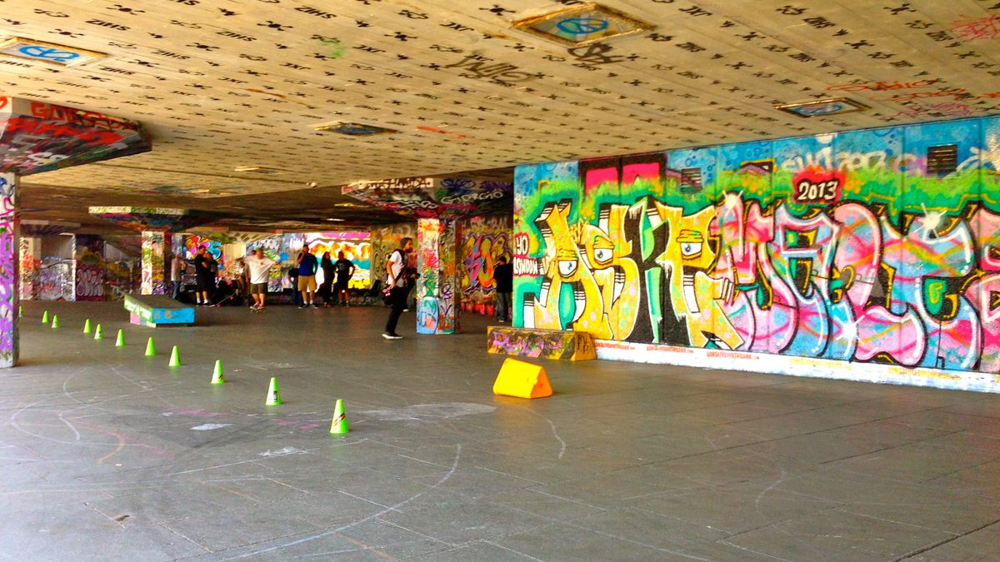
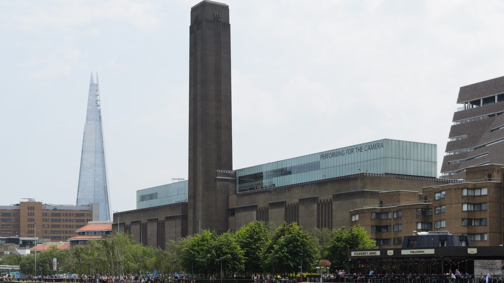
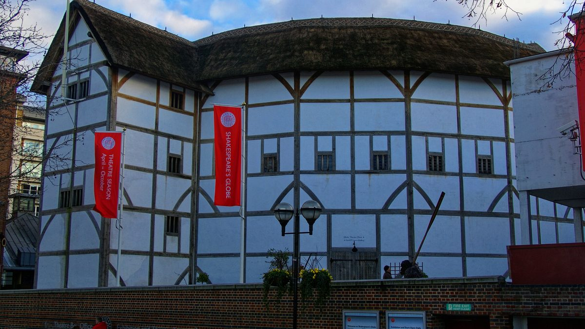
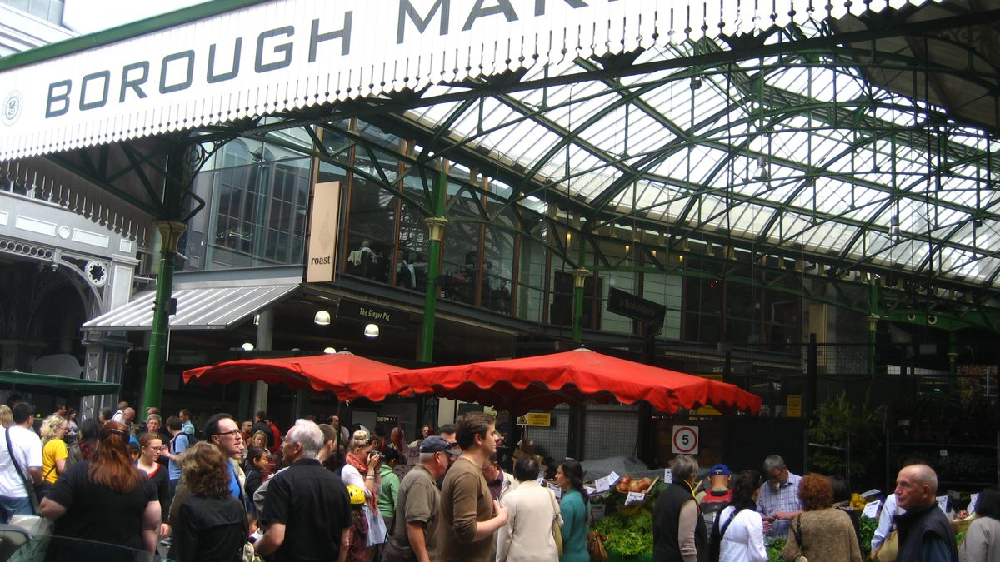
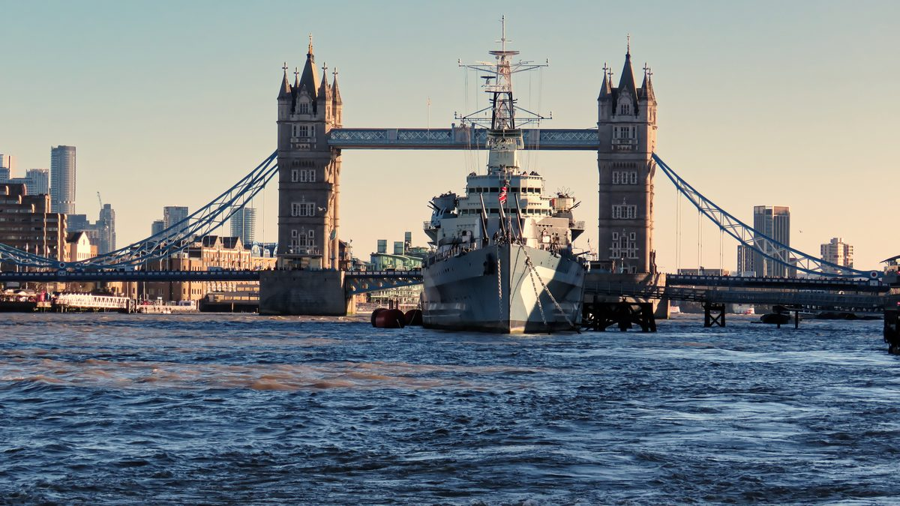

עודכן לאחרונה בספטמבר 2026
כמעט כל מי שמגיע ללונדון בפעם הראשונה הולך את הגדה הדרומית, ורובם הולכים אותה לא נכון: מתחילים בשוק בורו כי הוא מפורסם, נתקעים שם בשעה הצפופה, חוצים לטייט מודרן אחר הצהריים, ומגיעים ללונדון איי בערב לתור הארוך ולמחיר היקר ביותר של היום. אותם מקומות בדיוק, בסדר ההפוך, נותנים יום אחר לגמרי. הגדה הדרומית היא קו אחד לאורך הנהר, ממערב למזרח, וכל מה שצריך לדעת הוא איפה להתחיל, מה לוותר עליו, ומתי לעצור לאכול. זה המדריך לזה, וכל מקום בו יושב במתכנן ומוכן להיכנס למסלול.
בחרו כיוון ותראו כאן את המקומות עצמם, עם מה שכדאי לדעת לפני שהולכים.
מה זה הגדה הדרומית, ולמה הולכים אותה ממערב למזרח

הגדה הדרומית היא לא שכונה אחת אלא רצועה של שלושה קילומטרים לאורך הנהר, שמחברת שלושה מקומות שהיו פעם נפרדים לגמרי. במערב, מול הפרלמנט, סאות׳ בנק: אולמות התרבות שנבנו לפסטיבל בריטניה ב-1951 על שטח של מחסנים שהופצצו, והיום הם רויאל פסטיבל הול, התיאטרון הלאומי והלונדון איי. באמצע, מול קתדרלת סנט פול, בנקסייד: הגדה שבה במאה השבע עשרה, מחוץ לחוקי העיר לונדון שמעבר לנהר, עמדו התיאטראות, זירות הדובים והפאבים, ובהם הגלוב של שייקספיר מ-1599, והיום עומדים בה טייט מודרן בתוך תחנת כוח ישנה והגלוב המשוחזר. ובמזרח, מסביב לגשר לונדון, בורו: השוק הוותיק בעיר, שסחר על הגשר עצמו כבר לפני אלף שנה ועבר למקומו הנוכחי ב-1756, הקתדרלה, ומעל כולם השארד, שנפתח ב-2012 כבניין הגבוה בבריטניה.
מה שמחבר את שלושתם הוא הטיילת, שביל רציף להולכי רגל בלבד על גדת המים, בלי כביש אחד לחצות, מגשר וסטמינסטר ועד גשר המגדלים. וזו הסיבה שהכיוון חשוב: הולכים ממערב למזרח, מהלונדון איי לבורו, כי אז גלגל הענק מגיע בבוקר כשהתורים קצרים והכרטיס זול, שוק בורו מגיע בשעת הצהריים, והשארד וגשר המגדלים מחכים בסוף, כשהשמש כבר מאחוריכם ומאירה את הסיטי מעבר לנהר. מי שהולך הפוך מגיע לכל מקום בשעה הלא נכונה.
למי האזור הזה מתאים, ולמי פחות
גלגל הענק, הביג בן ממול, טייט מודרן, הגלוב ושוק בורו ביום אחד וברגל. אין הליכה אחרת בעיר שמכסה כל כך הרבה בכל כך מעט מאמץ.
אקווריום, גלגל ענק, מנהרת גרפיטי, מגרש גלגיליות ואוניית מלחמה עם תשעה סיפונים לטפס בהם. הטיילת שטוחה ורחבה, ועגלה עוברת בה בקלות.
שני מוזיאונים ענקיים בחינם, טייט מודרן והמוזיאון הצבאי הקיסרי, שוק מקורה מתחת לקשתות המסילה, וסיור בגלוב מתחת לגג.
אפשר לעשות כאן יום שלם בלי לשלם על כניסה אחת: הטיילת, טייט מודרן, ליק סטריט, הקתדרלה והמרפסת של מגדל אוקסו. הכרטיסים הגדולים הם בחירה, לא חובה.
ולמי זה פחות מתאים. מי שרוצה שכונה עם אופי, סמטאות וחנויות קטנות ימצא כאן טיילת רחבה ובנייני תרבות, ויעדיף את שורדיץ׳ או את נוטינג היל. מי שמגיע בשבת בצהריים לשוק בורו יעמוד בתור לכל דוכן, ומי שמנסה לדחוס את כל ששת הכרטיסים ליום אחד יגמור אותו עייף ועני, כי הכרטיסים כאן הם מהיקרים בעיר. הכלל: כרטיס אחד גדול ביום, לכל היותר שניים.
🚶 ההליכה הקלאסית, מקטע אחר מקטע

הטיילת עצמה, טיילת הגדה הדרומית, היא העצירה החשובה ביותר ביום, למרות שאין בה כרטיס ואין בה כניסה. שלושה קילומטרים על המים, ואלה המקטעים לפי הסדר, ממערב למזרח.
| מקטע | מה יש בו | עלות |
|---|---|---|
| גשר וסטמינסטר עד הלונדון איי | הביג בן מולכם מעבר לנהר, קאונטי הול עם אקווריום סי לייף בפנים, וגלגל הענק | הגלגל והאקווריום בתשלום |
| סאות׳בנק סנטר וגשר ווטרלו | רויאל פסטיבל הול עם אולמות כניסה פתוחים לכולם, מגרש הגלגיליות המצויר, ושוק ספרים יד שנייה מתחת לגשר | חינם |
| התיאטרון הלאומי עד גשר בלקפריירס | גבריאל׳ס וורף עם בתי הקפה, ומגדל אוקסו עם גלריית תצפית חינמית בקומה השמינית | חינם |
| בנקסייד: טייט מודרן, גשר המילניום והגלוב | המוזיאון בתחנת הכוח, הגשר להולכי רגל שמוביל ישירות לסנט פול, והתיאטרון של שייקספיר | המוזיאון חינם סיור הגלוב בתשלום |
| קלינק סטריט עד גשר לונדון | שרידי ארמון הבישופים, העתק ספינת גולדן היינד, קתדרלת סאות׳ווארק ושוק בורו | חינם |
| לונדון ברידג׳ עד גשר המגדלים | השארד, הייז גלריה המקורה, אוניית הקרב HMS בלפסט, בניין העירייה הישן, ומול גשר המגדלים סוף ההליכה | השארד והאונייה בתשלום |
ההליכה הרצופה, בלי להיכנס לשום מקום, לוקחת שעה וחצי. אף אחד לא עושה אותה ככה. בפועל היא השלד שעליו תולים את היום, ומה שקובע כמה זמן זה לוקח הוא כמה כרטיסים קונים. מדריך התמזה מסביר את הגשרים, את הגאות והשפל ואת השיט על הנהר, ואנחנו כאן עוסקים רק בגדה הזאת ובסדר שלה.
ליק סטריט, העצירה שלפני ההתחלה
מתחת לתחנת ווטרלו, שלוש דקות מהלונדון איי, עוברת מנהרת הגרפיטי ליק סטריט: מנהרה של שלוש מאות מטרים שבה מותר לצייר על הקירות באופן חוקי, ולכן היצירות מתחלפות כמעט מדי יום ולרוב יש בה אמנים שעובדים בזמן אמת, עם ריח צבע באוויר. חינם, פתוחה תמיד, ועם ילדים זו פתיחה טובה יותר ליום מכל מוזיאון. נכנסים אליה מהתחנה ויוצאים לכיוון הנהר, וזה בדיוק בדרך.
🎡 הלונדון איי והאקווריום, הכרטיס של הבוקר
הלונדון איי הוא גלגל ענק בגובה 135 מטרים, שסיבוב שלם בו נמשך כחצי שעה, בתא זכוכית סגור לעשרים וחמישה איש, מול הפרלמנט. זו הדרך הקלה ביותר לראות את כל לונדון מלמעלה בלי מדרגות ובלי מעלית, ולכן זה הכרטיס הנכון למי שיש לו כרטיס אחד ביום. נכון לספטמבר 2026 כרטיס מבוגר מתחיל בערך ב-29 ליש״ט בהזמנה מראש, והמחיר עולה ככל שמתקרבים לתאריך ולשעות הערב. מזמינים חלון זמן של בוקר, בין עשר לאחת עשרה, כשהתור קצר והאור טוב, ומחשבים שעה מלאה כולל ההמתנה. לחיצה על שם הגלגל בטקסט פותחת את המחיר המעודכן ביותר שיש לנו. מדריך התצפיות משווה בינו לבין השארד ולסקיי גארדן, ומסביר למי כדאי איזו.
לידו, בתוך בניין קאונטי הול, נמצא אקווריום סי לייף: מנהרת כרישים, פינגווינים ובריכת מגע, כשעה וחצי לביקור, ונכון לספטמבר 2026 כרטיס מבוגר מ-28 ליש״ט בהזמנה מראש. זה מהאטרקציות היקרות בעיר, ושווה רק עם ילדים קטנים, ואז בודקים כרטיס משולב עם הגלגל, שזול יותר משני כרטיסים נפרדים. בלי ילדים מדלגים.
🏭 טייט מודרן, גשר המילניום והגלוב

באמצע ההליכה, אחרי גשר בלקפריירס, עומד טייט מודרן: מוזיאון האמנות המודרנית של בריטניה בתוך תחנת הכוח בנקסייד, שנסגרה ב-1981 ונפתחה מחדש כמוזיאון ב-2000. הכניסה לאוסף הקבוע חינם, בלי הזמנה, וזה המוזיאון שבו גם מי שלא אוהב אמנות מודרנית נהנה, בגלל הבניין: אולם הטורבינות הענק בכניסה, שבכל שנה מתקינים בו יצירה אחת בגודל של האולם, והמרפסת בקומה העליונה של הבניין החדש, שנותנת בחינם את הנוף על סנט פול, על הנהר ועל הסיטי. פתוח כל יום מעשר עד שש, וכדאי לבדוק באתר את ערבי הפתיחה המאוחרת. שעה וחצי מספיקות: הטורבינות, קומה אחת של גלריות, והמרפסת.

מול הכניסה לטייט נמתח גשר המילניום, גשר להולכי רגל בלבד שנפתח ב-2000, נסגר אחרי יומיים כי התנדנד תחת רגלי ההולכים, ונפתח שוב ב-2002. לא חוצים אותו היום, כי הצד השני הוא כבר הסיטי, אבל הולכים עד אמצעו בשביל התמונה: סנט פול בדיוק בקצה. ומאה מטרים מזרחה עומד התיאטרון של שייקספיר, שחזור מעץ ופתוח לשמיים של הגלוב מ-1599, שנפתח ב-1997. בעונת ההצגות, מאפריל עד אוקטובר, כרטיס בעמידה בחצר עולה כמה ליש״ט בודדים וזו החוויה האמיתית, ובשאר השנה ובשעות היום עושים סיור מודרך של כשעה, נכון לספטמבר 2026 בסביבות 28 ליש״ט למבוגר. סיור הגלוב הוא הכרטיס השני ביום למי שאוהב תיאטרון, ועצירת מקורה טובה בגשם.
🥖 שוק בורו, מתי מגיעים ואיפה זה נכנס ביום

שוק בורו הוא הסיבה שהיום הזה נגמר במזרח ולא מתחיל בו. שוק המזון הוותיק בלונדון, מתחת לקשתות מסילת הרכבת ליד גשר לונדון, מחולק בין דוכני חומרי גלם, גבינות, לחם, בשר ודגים, לבין דוכני אוכל מוכן שאוכלים בעמידה: כריכים חמים, פאייה, פירות ים, מאפים ועוגות. הטעימות הן חלק מהתרבות, והדרך הנכונה לאכול כאן היא לא לבחור דוכן אחד אלא לעבור בין שלושה. לפי האתר הרשמי, נכון לספטמבר 2026: ביום שני סגור, שלישי עד שישי מעשר עד חמש, שבת מתשע עד חמש, וראשון מעשר עד ארבע. השעה הצפופה ביותר בשבוע היא שבת אחר הצהריים, והשעה הנכונה היא צהריים באמצע השבוע.
לכן במסלול הוא העצירה של הצהריים המאוחרים: מגיעים אליו מבנקסייד דרך קלינק סטריט, בערך בשעה שתיים, כשגל הצהריים כבר עבר, אוכלים, וממשיכים ללונדון ברידג׳ ולשארד. מי שהולך את היום בשבת מגיע לשוק בבוקר, לפני הגלגל, והופך את הסדר, כי בשבת בשעה שתיים אי אפשר לזוז בו. מדריך השווקים משווה אותו לשאר שווקי העיר ומסביר איזה שוק לאיזה יום.
🏙️ לונדון ברידג׳: הקתדרלה, עליית הגג, האונייה והשארד

הקצה המזרחי של היום צפוף באטרקציות, ולכן דווקא כאן צריך לבחור. קתדרלת סאות׳ווארק, ממש בכניסה לשוק, היא מהכנסיות הוותיקות בעיר, גותית מהמאה השלוש עשרה, ומוקפת היום בבנייני זכוכית. הכניסה חינם, רבע שעה של שקט אחרי הרעש של השוק, ולוח זיכרון לשייקספיר בפנים. מעבר לכביש, בעליית הגג של כנסייה ישנה, מסתתר תיאטרון הניתוחים הישן: חדר ניתוחים מ-1822, מהתקופה שלפני ההרדמה, שמגיעים אליו רק במדרגות לולייניות צרות. נכון לספטמבר 2026 הכרטיס עשר ליש״ט, ביקור של חצי שעה עד שעה, ומקום מוזר ובלתי נשכח למי שסקרן, לא לילדים קטנים.
מעל התחנה מתנשא השארד, תצפית של 310 מטרים, הבניין הגבוה בבריטניה, עם תצפית פתוחה בקומות 68 עד 72. נכון לספטמבר 2026 כרטיס מבוגר מתחיל ב-28 ליש״ט בהזמנה מראש, אין הגבלת זמן למעלה, וזה הכרטיס של סוף היום: מזמינים חלון זמן של שעה לפני השקיעה, עולים, ורואים את העיר באור יום, בשקיעה ובלילה בכרטיס אחד. ומי שמעדיף לטפס ולא לעלות במעלית הולך מאתיים מטרים על הנהר עד אוניית הקרב HMS בלפסט, סיירת מ-1938 שהשתתפה בפלישה לנורמנדי ועוגנת כאן מאז 1971, פתוחה על כל תשעת סיפוניה, מחדרי המכונות ועד התותחים. נכון לספטמבר 2026 כרטיס מבוגר בסביבות 27 ליש״ט, כשעתיים, הרבה סולמות, ואחת החוויות הטובות בעיר לילדים מגיל שבע. מהאונייה רואים את גשר המגדלים במלואו, ושם נגמרת הגדה הדרומית. מה שמעבר לגשר, המצודה והסיטי, הוא כבר האזור הבא.
👨👩👧 הגדה הדרומית עם ילדים
זה אחד משני האזורים הטובים בלונדון לילדים, יחד עם קנזינגטון, ומסיבה הפוכה: שם הכל בפנים, כאן הכל בחוץ. הטיילת שטוחה, רחבה, בלי כבישים, ובכל מאתיים מטרים יש משהו לעצור בו.
- אקווריום סי לייף והלונדון איי. שניהם באותו בניין, ועם ילדים קטנים זה הבוקר: קודם הכרישים, ואז הגלגל. כרטיס משולב זול משניים נפרדים, ומזמינים את הגלגל לשעת בוקר.
- ליק סטריט. מנהרת גרפיטי שמותר בה לצייר, ואמנים שעובדים מול העיניים. חינם, ועשר דקות שילדים זוכרים.
- מגרש הגלגיליות מתחת לסאות׳בנק סנטר. עומדים על המדרגות ומסתכלים על המחליקים בין הקירות המצוירים. חינם, ובכל שעה.
- טייט מודרן. לא הגלריות אלא אולם הטורבינות, שהוא אולם ענק לרוץ בו, והמרפסת למעלה. חצי שעה, בחינם, וזה מספיק.
- אוניית הקרב HMS בלפסט. תשעה סיפונים, סולמות, תותחים ותאי שינה, וילדים מגיל שבע לא רוצים לצאת. עם עגלה לא נכנסים, ולכן זה הפרס של סוף היום לגילי בית ספר.
- שוק בורו. צהריים בעמידה שבו כל ילד בוחר משהו אחר, וזה פותר את בעיית המסעדה. לא בשבת בצהריים.
🌧️ אם יורד גשם
הגדה הדרומית היא אזור טוב לגשם, אבל צריך להפוך את ההיגיון שלה: במקום ללכת על המים, קופצים בין הגגות. מתחילים במוזיאון הצבאי הקיסרי, קילומטר דרומה מהנהר בלמבת׳, מוזיאון ענק ובחינם על מלחמות המאה העשרים, עם תערוכת שואה קבועה ומקיפה שאינה מיועדת לילדים צעירים, ושלוש שעות עוברות בו בקלות. משם ברכבת תחתית או באוטובוס לטייט מודרן, ואחריו סיור בגלוב מתחת לגג, צהריים מאוחרים בשוק בורו שכולו מתחת לקשתות, וסיום באונייה או בתיאטרון הניתוחים. את הגלגל ואת השארד שומרים ליום בהיר, כי בגשם לא רואים מהם כלום. המדריך ליום גשום בלונדון מכסה את שאר האפשרויות בעיר, והגרסה למשפחות מסבירה מה עושים עם ילדים רטובים.
🌇 ערב ושקיעה על הגדה
הגדה הדרומית היא המקום הטוב בלונדון לסיים בו יום, כי בערב היא לא מתרוקנת אלא מתמלאת. הטיילת מוארת לכל אורכה, אולמות הכניסה של רויאל פסטיבל הול פתוחים בחינם עד מאוחר עם מוזיקה חיה בערבים רבים, ומגשר המילניום רואים את סנט פול מואר מעבר לנהר. שני הכרטיסים של הערב הם השארד, שבו חלון זמן של שעה לפני השקיעה נותן את היום ואת הלילה יחד, והלונדון איי בחשכה, שיפה יותר אבל יקר יותר ועמוס יותר, ולכן אנחנו מעדיפים אותו בבוקר ואת השארד בערב. ומי שבלי כרטיס יושב על המדרגות של הטיילת מול הפרלמנט המואר, וזה בחינם.
🚶 חצי יום או יום מלא, מוכן להליכה
המסלול הזה הולך ממערב למזרח, מהגלגל לשארד, מהסיבות שהסברנו: הגלגל בבוקר, בורו בצהריים המאוחרים, השקיעה בסוף. חצי היום הוא ההליכה עצמה עם כרטיס אחד, וזה מה שרוב האנשים צריכים ביום הראשון שלהם. יום מלא הוא אותו קו עם שלושה כרטיסים נוספים, ואנחנו מציגים אותו בנפרד כדי שלא תנסו לדחוס את שניהם.
העצירות במסלול הן ארבע, אבל ההליכה עוברת ליד עוד עשרה דברים, ליק סטריט, מגרש הגלגיליות, שוק הספרים, מגדל אוקסו, גשר המילניום, הגלוב מבחוץ, הקתדרלה. הם לא עצירות במתכנן כי לא צריך לתכנן אותם: הם פשוט בדרך.
חצי יום בנוי מראש שמתחיל בגלגל הענק ונגמר בשוק בורו. לחיצה אחת מכניסה את כולו למסלול שלכם, ומשם אפשר לגרור, להחליף ולהוסיף ימים.
חצי היום נוסף למסלול שלכם ואפשר להמשיך לגלוש. אם כבר בניתם מסלול קודם, הוא לא יימחק.
- 10:00הלונדון איימתחנת Waterloo, דרך ליק סטריט. חלון זמן של בוקר שהוזמן מראש, שעה כולל ההמתנה, והביג בן ממול
- 11:15טיילת הגדה הדרומיתמזרחה על המים: סאות׳בנק סנטר, מגרש הגלגיליות, שוק הספרים מתחת לגשר ווטרלו, ומרפסת מגדל אוקסו. שעה בקצב נוח
- 12:30טייט מודרןחינם. אולם הטורבינות, קומה אחת של גלריות והמרפסת. ביציאה, גשר המילניום עד האמצע לתמונה של סנט פול, והגלוב מבחוץ
- 14:15שוק בורודרך קלינק סטריט והקתדרלה. צהריים מאוחרים בעמידה, שלושה דוכנים, ומשם תחנת London Bridge, או השארד למי שממשיך
פירוט מלא של היום, כולל הגרסה המלאה
| שעה | איפה | מה עושים |
|---|---|---|
| 10:00 | הלונדון איי | מגיעים לתחנת Waterloo ויוצאים דרך מנהרת ליק סטריט אל הנהר, חמש דקות. עולים לגלגל בחלון הזמן שהוזמן, חצי שעה של סיבוב ורבע שעה של תור. עם ילדים קטנים, האקווריום לפני כן. |
| 11:15 | הטיילת | הולכים מזרחה כשהנהר משמאל. עוצרים באולמות הכניסה של רויאל פסטיבל הול, במגרש הגלגיליות, בשוק הספרים מתחת לגשר ווטרלו, ובגלריה החינמית בקומה השמינית של מגדל אוקסו. קילומטר וחצי, שעה. |
| 12:30 | טייט מודרן | אולם הטורבינות, קומה אחת של גלריות לפי הטעם, והמרפסת בקומה העליונה של הבניין החדש לנוף על סנט פול. שעה וחצי. ביציאה עד אמצע גשר המילניום ובחזרה. |
| 14:00 | ביום המלא: סיור הגלוב | שעה של סיור מודרך בתיאטרון המשוחזר, או כרטיס בעמידה להצגה בעונה. מי שעושה את חצי היום עובר ליד הגלוב ומצלם אותו מבחוץ. |
| 14:15 | שוק בורו | ממשיכים על הנהר דרך קלינק סטריט, עוברים ליד העתק ספינת גולדן היינד וליד הקתדרלה, ונכנסים לשוק. צהריים בעמידה, שלושה דוכנים, ואם יש כוח עוד רבע שעה בקתדרלה. חצי היום נגמר כאן, בתחנת London Bridge. |
| 16:30 | ביום המלא: HMS בלפסט | מאתיים מטרים מזרחה על הנהר. שעה וחצי על תשעת הסיפונים, עם הנוף לגשר המגדלים מהסיפון העליון. |
| שקיעה | ביום המלא: השארד | חוזרים לתחנה ועולים לתצפית בחלון זמן של שעה לפני השקיעה. אין הגבלת זמן, אז רואים את היום הופך ללילה, ויורדים ישירות לרכבת. |
חלופות ותוספות
- בשבת: הופכים את הסדר של הקצה המזרחי. מגיעים לשוק בורו בתשע, כשהוא נפתח, אוכלים ארוחת בוקר, ואז הולכים מערבה עם הנהר מימין, ומסיימים בגלגל אחר הצהריים. פחות יפה בכיוון הזה, אבל בורו בשבת בצהריים לא שווה את זה.
- קצר יותר, שלוש שעות: הטיילת מהגלגל ועד טייט מודרן, וחוזרים במעבורת הנהר מבנקסייד. בלי כרטיסים בכלל.
- הגרסה למשפחות בקישור שמעל: האקווריום, הגלגל, הטיילת, ליק סטריט והאונייה. שני כרטיסים לילדים, ועדיין בלי מוזיאון.
- הגרסה ליום גשום בקישור שמעל: המוזיאון הצבאי הקיסרי, טייט מודרן, בורו והאונייה, ואת הגלגל שומרים.
- להמשיך לסיטי: מהאונייה חוצים את גשר המגדלים, ומול המצודה מתחיל האזור הבא בסדרה. או מגשר המילניום ישירות לסנט פול, למי שיש לו עוד כוח.
- להמשיך לגריניץ׳: מרציף London Bridge City עולים על מעבורת הנהר מזרחה, חצי שעה על המים, ומדריך גריניץ׳ ממשיך משם. הדרך היפה ביותר לחבר שני אזורים ביום אחד.
🚇 איך מגיעים, ואיזו תחנה לאיזה קצה
הגדה הדרומית היא אזור תחבורה 1, ויש לה תחנה בכל קצה. ההיגיון פשוט: מגיעים לקצה המערבי, ויוצאים מהקצה המזרחי.
- Waterloo, להתחלה. קווי ג׳ובילי, נורת׳רן ובייקרלו, ותחנת הרכבת הראשית. חמש דקות דרך מנהרת ליק סטריט אל הגלגל. זו התחנה של הבוקר, ואליה מגיעים מכל מקום במרכז.
- Southwark ו-Blackfriars, לאמצע. תחנת Southwark בקו ג׳ובילי היא עשר דקות מטייט מודרן ומהגלוב, ותחנת Blackfriars ברכבת Thameslink יוצאת ישירות לגדה הדרומית, ליד הטייט, וזו הדרך למי שמגיע רק לבנקסייד.
- London Bridge, לסוף. קווי ג׳ובילי ונורת׳רן ורכבות, ממש מתחת לשארד וצמודה לשוק בורו. מכאן חוזרים בסוף היום, וזו התחנה הנגישה ביותר באזור.
- Lambeth North, למוזיאון. קו בייקרלו, שלוש דקות מהמוזיאון הצבאי הקיסרי, לגרסה של יום הגשם.
ועל המים: מעבורות הנהר עוצרות בשלושה רציפים לאורך הגדה, ליד הגלגל, בבנקסייד ליד הטייט, ובלונדון ברידג׳ סיטי ליד האונייה, ואפשר לשלם בהן בכרטיס רגיל. זו הדרך לקצר את ההליכה ביום חם, או להמשיך ממנה מזרחה לגריניץ׳. המדריך לקווי התחתית מסביר איזה קו עושה מה, ומדריך התחבורה מסביר את תקרות התשלום.
מה משלבים עם הגדה הדרומית באותו יום
- וסטמינסטר בבוקר, מעבר לגשר וסטמינסטר: הביג בן, הפארק והארמון, ואז חוצים את הגשר לגלגל. ככה בנוי היום הראשון במסלול שלושת הימים.
- הסיטי אחר הצהריים, מעבר לגשר המילניום או לגשר המגדלים. סנט פול, סקיי גארדן והמצודה הם האזור הבא בסדרה, ומדריך התצפיות מסביר איזו תצפית שם חינם.
- גריניץ׳ במעבורת, מרציף לונדון ברידג׳ סיטי, חצי שעה. מדריך גריניץ׳ ממשיך משם.
- לינה על הגדה. מי שישן כאן הולך למחצית מרשימת החובה מהמלון, ומדריך הלינה בגדה הדרומית מסביר אם המחיר מוצדק.
🔗 איך הגדה הדרומית משתלבת בטיול שלכם
הכלל שלנו: הגדה הדרומית היא היום הראשון או השני של כל טיול, כי היא נותנת בהליכה אחת את התמונה הגדולה של העיר, הנהר, הביג בן, סנט פול והשארד, ואחריה כל השאר מסתדר במפה שבראש.
- בטיול של שלושה ימים, היא אחר הצהריים של היום הראשון, ישירות אחרי וסטמינסטר, עם הטיילת, טייט מודרן ובורו. מסלול שלושת הימים בנוי ככה.
- בטיול של חמישה ימים, אותו יום ראשון, ובנוסף ערב אחד לשארד או לגלגל. מסלול חמשת הימים משאיר לזה מקום.
- בטיול של שבעה ימים, יש זמן ליום המלא שלמעלה, כולל הגלוב והאונייה. מסלול שבעת הימים נותן לה את היום.
- עם ילדים, זה היום שבונים סביבו את הטיול, יחד עם קנזינגטון. המדריך ללונדון עם ילדים מסביר את הסדר.
שאלות שחוזרות על עצמן
כמה זמן צריך לגדה הדרומית?
חצי יום מספיק להליכה עצמה עם עצירה אחת בתשלום: הלונדון איי, הטיילת, טייט מודרן וצהריים בשוק בורו, בערך שני קילומטרים ושש שעות. יום מלא נדרש רק אם מוסיפים את סיור הגלוב, את HMS בלפסט ואת השארד בשקיעה, ואז זה כשלושה וחצי קילומטרים ועשר שעות.
לאיזה כיוון הולכים את הגדה הדרומית?
ממערב למזרח, מהלונדון איי לכיוון גשר לונדון. ככה הלונדון איי נעשה בבוקר כשהתורים קצרים, שוק בורו מגיע בשעת הצהריים, והשארד או גשר המגדלים מחכים בסוף, כשהשמש שוקעת מאחוריכם ומאירה את העיר.
מתי שוק בורו פתוח?
לפי האתר הרשמי, נכון לספטמבר 2026: ביום שני סגור, שלישי עד שישי מעשר עד חמש, שבת מתשע עד חמש, וראשון מעשר עד ארבע. שבת אחר הצהריים היא השעה הצפופה ביותר, ואמצע השבוע בצהריים הוא הזמן הנוח.
מה חינם בגדה הדרומית?
הטיילת כולה, טייט מודרן כולל מרפסת התצפית, מנהרת הגרפיטי בליק סטריט, קתדרלת סאות׳ווארק, המוזיאון הצבאי הקיסרי, הגלריה של מגדל אוקסו והכניסה לשוק בורו. בתשלום: הלונדון איי, אקווריום סי לייף, סיור הגלוב, HMS בלפסט, תיאטרון הניתוחים הישן והתצפית בשארד.
צילומים במדריך הזה מוויקישיתוף, ברישיונות קריאייטיב קומונס: תמונת הפתיחה, הטיילת Lewis Clarke, CC BY-SA 2.0; הלונדון איי David Anstiss, CC BY-SA 2.0; מגרש הגלגיליות Studio Sarah Lou, CC BY 2.0; טייט מודרן King of Hearts, CC BY-SA 4.0; שוק בורו Jeremy Keith, CC BY 2.0; HMS בלפסט Acabashi, CC BY-SA 4.0; הגלוב Txllxt TxllxT, CC BY-SA 4.0. התמונות נחתכו לרוחב העמוד.